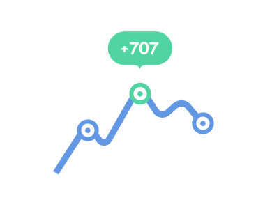

The housing market is subject to the same economic laws of supply and demand as every other industry. When there are more buyers than sellers, the supply of houses goes down, and demand increases, making houses harder to buy and more expensive. In addition to the supply and demand of a market, the characteristics of units being sold also affect the selling prices of homes. A property's size, location, appearance, and other features can affect its demand and price. The state of the economy, interest rates, real income, and changes in the size of the population also influences the housing market. Over time, the price of houses fluctuates. If you want to buy a home, understanding what makes prices go up helps you know when and where you'll get the best price for a home. We aim to make our evaluations based on every basic parameter that is considered while determining the price of a housing unit. Using a machine learning model, we will make predictions to try to achieve a high accuracy score.
